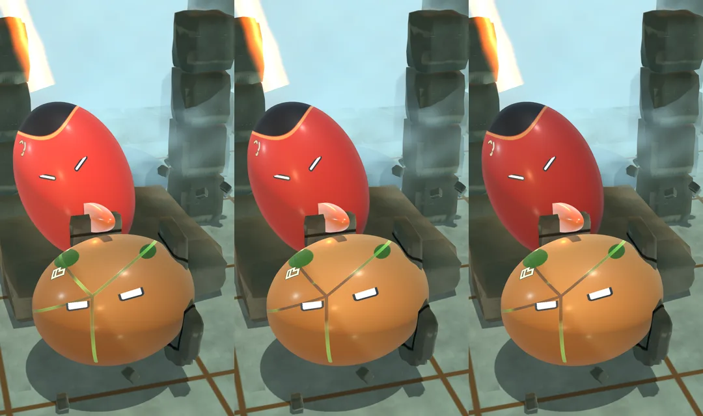

Testing moves as a complete chain
A technique can now reach the native duel core as a complete ordered chain of moves. The core quotes the whole chain before accepting it, so a later step cannot quietly overspend Glow or reuse matter that an earlier step has already reserved. An invalid step leaves the world unchanged.
Timing remains authored. Each move carries its own preparation, release and recovery, and a legal transition can begin during recovery. The core checks those timings and resolves consequences; the player and animation system still have to supply the movement. Native tests exercise consecutive released forms against actual contact and guard outcomes.
Save and restore checks exposed five real defects, including cancelled damage that could remain pending and inconsistent queued movement. The corrected native build rejects all five altered checkpoints without changing the world. Restoring valid checkpoints both during a released form and between moves reproduces the same next eight ticks.
This is backend evidence, and integration into the playable workshop is next. The first recorded control test has also been reviewed privately: its fight viewport and material readability need work before it belongs in the gallery. We have selected brighter, clearer orb material settings for the next scenes, while hands-on gameplay remains blocked by the blank window and error dialog. M1 is still in progress, with no approved game film.
Inside the work


